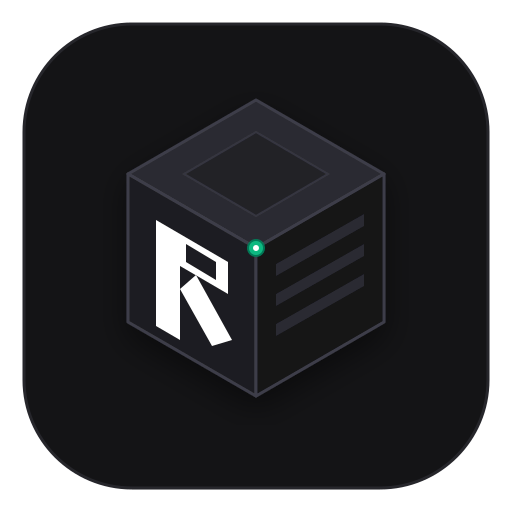
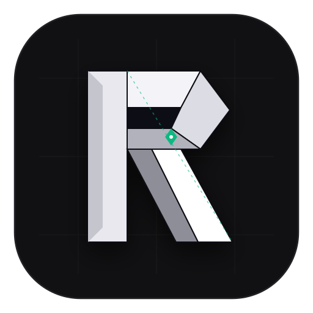
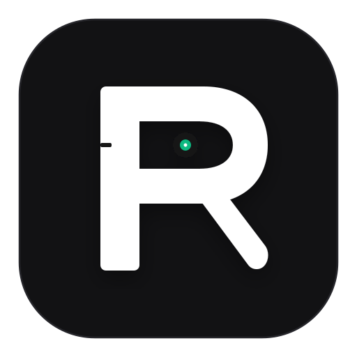
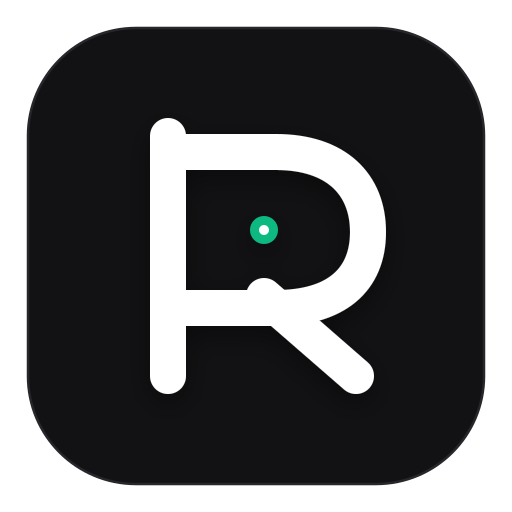

Semua Gambar AI Slop Telah Dihapus Total
Sesuai arahan Anda, render 3D difusi AI yang berantakan telah dihapus seluruhnya. Di bawah ini adalah 4 konsep logo vektor murni (Scalable SVG) yang dibuat dengan presisi matematis garis, bidang geometris datar, dan kontras tajam ala Notion & Obsidian.
4 Konsep Vektor Resmi Ravalt
Klik salah satu konsep untuk melihat perbandingan dan mengunduh filenya langsung.
Isometric Vault Cube


Ciri Khas: Kubus isometrik 3D datar ala icon Notion, dengan monogram 'R' terukir rapi di bidang pintu brankas depan, 3 slot deadbolt horizontal di sisi kanan, dan titik Zero-Knowledge hijau zamrud di engsel pusat.
Faceted Vault Shard


Ciri Khas: Terinspirasi langsung dari kristal logo Obsidian: huruf 'R' dibentuk dari 8 bidang poligon datar bergradasi monokrom dengan sudut tajam, rongga kunci geometris di tengah, dan garis putus-putus koordinat blueprint.
Monolith Vault Key


Ciri Khas: Minimalisme abadi (gaya Dieter Rams / Linear / Apple): pilar vertikal monolitik tebal, lengkungan brankas presisi dengan lubang kunci melingkar dan titik hijau Zero-Knowledge di pusatnya, serta kaki deadbolt 45 derajat yang tegas. Sangat bersih, elegan, dan paling mudah diingat.
Single-Stroke Architectural R


Ciri Khas: Garis vektor tebal bersambung (single-stroke) menyerupai sirkuit atau kait gembok modern ala icon Raycast / GitHub. Desain garis berujung bulat (*round stroke cap*) dengan pin pengaman hijau di tengah.
Uji Ketajaman Pada Berbagai Resolusi Layar
Menampilkan Konsep 3 (Rekomendasi) pada ukuran asli 128px, 64px, 48px (icon Android), 32px (favicon), dan 16px.